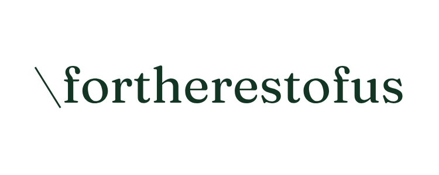

For The Rest Of Us is a solutions and product development consultancy in Johannesburg. It builds (its own apps, and custom apps, SaaS and websites for clients) and it consults (product and growth direction, brand and content, business tech and automation). One story about both: identify the problem, build what solves it, grow the business around it.
The site is not a stack of sections. It is five numbered chapters between a promise and a single ask: why, use cases, services, process, proof. Every claim sits next to its evidence. Nothing on it is invented.
For The Rest Of Us in prose, title case, four words. The wordmark is one lowercase word with a leading backslash: \fortherestofus. "FTROU" is internal shorthand only and never appears on a public surface. The studio is the studio of Alroy Ndhlovu; the footer says so, and the booker on /contact shows his name.
The second arm is called services or consulting, and is never called "advice". The two arms are one story, not two businesses: the apps are the studio's own answers to the same question a client arrives with, and the same lifecycle runs through both.
Most products fail because nobody needed them. The product and its brand are one build. A product nobody finds solves nothing. These are the why chapter on the home page and also the service architecture: identify, build, grow.
Every app surface leads with its problem line from lib/apps.ts, not a feature list and never "look what we built". The apps are evidence for the thesis; the same thesis is the pitch for building a client's product.
Identify takes the full-saturation ember card on both pages that show the process, which puts the first step in front. The five service slugs and URLs never change; the grouping is presentational.
The mark is a lowercase serif logotype with a thin backslash in front: the one serif and the one green on a site that is otherwise a single grotesk in ink. That contrast is the point. The mark is a supplied image; it is never retyped, and the site's typeface is never used to imitate it.

Forest on light · logo-light.png · #123524 · navbar
Cream on ink · logo-dark.png · #faf3e8 · footer, dark-theme navbar
Cream on forest · the OG image and app icon (app/opengraph-image.png, app/icon.png). Forest #123524 exists only here and in the light mark: it is not a site token and never a section colour.
On the sunken well · still forest. There is no ink-black or accent version of the mark and none should be made.
| Placement | Height | File | Note |
|---|---|---|---|
| Navbar | 22px | logo-light.png / logo-dark.png swapped on .dark | Both files are 750×110 with the transparent padding already cropped. Never re-pad. |
| Footer brand block | 28px | logo-dark.png | The footer is always ink, so the cream mark is the only footer mark. |
| Guidelines hero | 44px | logo-dark.png | The largest the mark appears on any studio surface. |
| OG / social | 1200×630 · 2160² | app/opengraph-image.png | Cream mark centred on forest, generous margin. Per-app OG images are still to do. |
Clear space: at least the height of the lowercase letters on every side. The mark sits alone in its row; nothing shares its baseline. Two rules: the two supplied colourways are the only ones, and the mark is never stretched, rotated, given a shadow or set on a photograph.
White canvas, ink type, ink buttons. Colour enters a page through imagery, through an app's own accent on that app's pages, and through the tint family on the story-chapter cards and stat cards. Everywhere else there is no section-level brand colour and no pastel wash. Tokens live in app/globals.css; Tailwind aliases in tailwind.config.ts. Use tokens, never raw hex.
Four soft washes derived from the four app accents, so the "pop" is literally the products. Each pairs with a -deep text colour that passes contrast on the wash. Allowed only on the story chapter-card grids (use cases, services), the closing scatter, and the stat cards on /contact and /studio. A real, sourced number is the one other thing that has earned a block of colour. Both themes have their own set: dark tints fold the accent into the dark surface and lift the deep text toward white.
accent-deep for any accent-coloured text or icon; raw accent fails on white (4.48:1)-deep partner for textbg-ink-surface for anything that must stay dark in both themes (the phone bezel); ink is the text token and flips to near-whiteApfel Grotezk (SIL Open Font License) is the only typeface, self-hosted from fonts/ and loaded with next/font/local. No Google-hosted fonts. The family has no italics, so globals.css neutralises <i> and <em>; emphasis is a weight change, never a slant. The serif exists only inside the wordmark image.
| Role | Weight | Setting | Where |
|---|---|---|---|
| Page H1 | 500 | 2.5rem → 3.5rem → 4rem · leading 1.03 · tracking −0.035em | Home hero, page heroes. Second clause in muted. |
| Section H2 | 500 | 2rem → 2.75rem → 3.25rem · leading 1.08 · tracking −0.02em · balanced | SectionHeading on every chapter |
| Band / card H3 | 500 | 1.25rem to 1.75rem · tracking −0.015 to −0.02em | Cards, app bands, testimonial leads |
| Lead paragraph | 400 | base → lg · leading relaxed · max-width reading (720px) | Section subtitles, hero sub |
| Body | 400 | 0.9375rem to 1rem · leading relaxed | Card copy, footer links, nav |
| Eyebrow | 500 | 0.8125rem · uppercase · tracking 0.14em · muted, with an accent tick | EyebrowChip, footer column heads |
| Chapter numeral | 400 | 0.8125rem · tabular · tracking 0.08em · faint | ChapterMark, inline with the eyebrow |
| Badge | 500 | 0.6875rem · uppercase · tracking 0.1em · live dot | Status (Live / Beta / In Development), platform |
| Stat numeral | 500 | display size · .nums tabular figures | Stat cards, hero proof line, KPI rotator |
Sentence case everywhere. Uppercase belongs to the eyebrow, the badge and the footer column heads, and nowhere else. Numbers that sit in a row use tabular figures so they do not jitter when they count up.
The chapter numeral sits inline with the eyebrow, one row. Spacing between the levels is deliberately uneven (label to title 20px, title to sub 24px): equal gaps make a heading stack read as one block. An eyebrow is a category, not a mood: it earns its place when it gives the reader a keyword the headline lacks ("Why we build", "Work delivered for", "Case in point"). It is cut when it is conversational filler ("Start here", "Say hello"), which is why CallToAction takes no eyebrow at all, and it never restates its own headline.
Second person, active, short sentences, verb-first buttons, concrete numbers. The site keeps its wit, but rations it. It is honest to the point of saying what did not work, and it never claims a number it did not measure.
Lead with the symptom, not the service. Buyers search "why is my website not converting", not "conversion rate optimisation". Name the problem before naming what we sell.
Claims never travel without proof. Every number, quote or client name sits next to the claim it verifies, never more than one scroll away.
Only real numbers, only real people. lib/proof.ts is the sole home for result stats, each with a source note. Testimonials are real quotes from real named people, beside their organisation's logo, never a face we do not hold.
Say it once. A good line has one home on the site. Reuse it on a second surface and it reads as a template.
"Products and services that solve real problems." · "You know you're doomscrolling. Nothing calls you out." · "It's 6pm and you're staring into the fridge again." · "AI made content cheap to make. And worthless to read." · "Have an idea worth building?" · "We will reply with what it would take, how long, and what it costs."
Buttons are verbs: Start a project · See the apps · Add to Chrome · Book a call. The single business ask ("Start a project") appears once per page, after the proof.
The founder note is a signed letter, three honest paragraphs, signed "Alroy". Not a bio card.
| Rule | Detail |
|---|---|
| No em dashes | They were the house punctuation and the most consistent AI tell on the site. A colon when the second half explains the first, a full stop for a new thought, commas for a parenthetical. Source comments may keep them. The one survivor is "IFC — International Finance Corporation", the organisation's own name. |
| Consulting, never advice | The second arm is "services" or "consulting". "Advice" and "advise" do not appear. |
| Product names, as their own brands write them | "tapa." keeps its dot and its lowercase. CaughtSlipping, InSpiritInTruth and Hakkan are one word each, camel-cased. Each app has its own guideline document in its own repo; this one governs only how they appear on the studio site. |
| Our results and other people's research never share a container | Borrowed research (McKinsey, Slack, Deloitte, Google, CB Insights) lives inline in prose with the source named in the sentence. Stat cards and StatBand are for numbers we measured. The IDC "20–30% lost to inefficiency" and "$62k average app cost" figures do not survive contact with their sources and are not used. |
| Name clients, never their commercial data | A client's name and the problem solved are fine. Their pricing, pipeline volumes, media spend or absolute acquisition costs never ship. State those as ratios or outcomes ("~3× better than the category median", "0 → live"). |
| "Work delivered for" | The client rail is always headed this way, never "trusted by" or anything implying endorsement. Names as type, not logos. It sits beside the closing ask, once per page, never in the hero or footer, and ends on "and more". |
| "The tools we work with" | The tool rail is non-exhaustive and ends on "and more". Add a tool only if someone here has actually run it. |
The honesty line lives on /contact only | "Tell us X and we will tell you honestly Y" was on six surfaces and read as a template. Elsewhere the ask says what happens next. |
| One quip per page | "A tiger, obviously" and the CaughtSlipping verdicts stay. Rule-of-three fragments and "not X but Y" antitheses are thinned, not purged. |
| Status is literal | Hakkan is private beta and is never described as launched. CaughtSlipping is Live on the Chrome Web Store. Giving copy is voluntary-gift only; a gift never unlocks anything. |
| Trailing slash on every internal href | The site serves with trailingSlash: true. A missing slash costs a 308 redirect. |
lib/proof.ts
a rounded-up or "estimated" stat
an invented testimonial, title or company
Clean, monotone editorial SaaS. Big grotesk headlines, white cards inside a sunken well, ink buttons with a soft-rectangle radius, one dark closing block and a dark footer. Two visual territories share the tokens and must not share a page.
PillButton is the primary call to action. It is a soft rectangle, not a pill: the full pill read as template UI and was squared off at Alroy's direction. The arrow lives in its own inverted chip. Hover lifts it half a pixel and adds the pill shadow. Focus is a two-pixel ink outline, offset.
Variants: ink (default), ghost (hairline, usually without the arrow, the exploratory second action), onInk (inverted, inside the closing block), and accent, which exists for app pages where the accent slot is the app's own colour.
| Concern | Rule |
|---|---|
| Radii | card 16px · well 24px · block 32px (the ink closing block) · buttons 12px with an 8px arrow chip · badges typographic, no border · icon tiles 12px at 48, 16px at 64 |
| Shadows | card (barely there) · card-hover · pill (under a lifted button) · nav (the scrolled navbar). None of them in dark mode; hairlines do the separating. |
| Grid | Content max-width 1200px, reading max-width 720px. Gutters px-5 on mobile, px-8 from sm. Twelve columns on lg. |
| Vertical rhythm | Section padding is the only thing that spaces sections, and adjacent paddings stack: md (py-12 sm:py-16) is a 128px boundary on desktop. Internal breaks stay visibly smaller: mt-12 max inside a section, mt-8 after a heading. Measure the real gap before adding space. |
| Ink budget | At most two dark moments per page, never in the same viewport. The closing CallToAction and the footer spend it. |
| Grain | The .grain SVG noise overlay (5.5% opacity) sits on ink blocks and placeholder art only. |
| Navbar | Transparent at rest over the light page top, opaque canvas with a hairline and the nav shadow once scrolled. Never translucent: ink type on a blurred dark section is unreadable. |
| Eyebrow and badge | Both typographic. The bordered-pill treatments were removed with the rest of the template chrome. A status badge is a live dot plus small caps in a semantic colour that reads on any accent. |
Home, /services, /studio, /contact. Numbered chapter cards on a sunken well, tint washes on the story grids, a slim numbered process strip, testimonials beside the claims they verify, one ink block to close.
/apps and every app page. Full-bleed alternating bands, big type, real screenshots bleeding off the outer edge, a hairline spec strip, the app's own accent washed behind its frame. No card stacks. A phone shot goes in PhoneFrame; a browser shot in a browser frame; the extension popup in a panel.
Keeping each language in its own territory is what stops the site reading as two designs. The apps index used to be four cards on a tray and broke this rule; it is now four editorial bands.
Every image on the site is something that exists: a screenshot of a shipped product, a photograph of work that was made, a client's own logo beside their own words. Simulated UI, generated faces and stock photography are out. Colour arrives through these images, which is why the ground stays plain.
lib/apps.ts so a missing file breaks the build and every frame takes the capture's own aspect ratiobuiltSites holds click-to-play walkthroughs, because a still of a website says almost nothingclient / venture / exploration on every case, so LumiSkin never sits in a "real clients" gridProcessBand, labelled as an illustration, with no names, numbers or resultsPhoneFrame: framing is fine, inventing hardware is notMotion is framer-motion only, used sparingly: reveals at 0.35 to 0.5s on the [0.22, 1, 0.36, 1] ease, the stat count-up at 1.2s, the marquee at 38s linear. Everything checks useReducedMotion or prefers-reduced-motion and stops. No WebGL, no three, no GSAP without a specific effect that demands it.
Every ratio below was computed with the WCAG relative-luminance formula against the token hexes in globals.css. When a pair fails, the token or its use changes, not the standard. Theme is a manual light/dark toggle (next-themes, light default, no system follow).
| Pair | Light | Dark | Verdict |
|---|---|---|---|
| Text on canvas | 18.25 | 16.60 | AAA |
| Muted on canvas | 5.39 | 7.04 | AA at body size; the second line of every headline relies on this |
| Muted on sunken | 4.89 | 6.52 | AA |
| Faint on canvas | 2.58 | 3.45 | Decoration only: chapter numerals are aria-hidden |
| Accent on canvas | 4.48 | 6.26 | Light fails by 0.02, which is why accent text uses accent-deep |
| Accent-deep on canvas | 6.02 | 7.84 | AA. The accent-as-text token |
| Accent-deep on accent-soft | 4.97 | — | AA (the "Don't" tag above) |
| Canvas on ink (button) | 18.25 | 16.60 | AAA |
| Ink-muted on ink-surface | 7.04 | — | AA. Footer links and closing-block body |
| Amber-deep on amber | 4.89 | 7.18 | AA |
| Olive-deep on olive | 5.61 | 6.35 | AA |
| Rust-deep on rust | 4.24 | 5.17 | Light passes only as large text (3:1). Use rust-deep on the rust wash at heading size, or set body copy on rust in ink (9.91) |
| Lime-deep on lime | 9.34 | 8.36 | AAA |
| Status: Live / Beta / In Development | 6.33 / 6.91 / 5.38 | — | AA on canvas, with a dot so the state is not colour alone |
| App accent-deep on white (CS / ISIT / tapa. / Hakkan) | 5.38 / 7.01 / 6.02 / 10.44 | — | AA. Raw CaughtSlipping gold (1.88) and Hakkan lime (1.25) are fills, never text |
Other commitments already in the code: a visible two-pixel ink focus ring on every interactive element; the nav sheet locks body scroll and closes on route change; every decorative artefact (the closing scatter, chapter numerals, the hero rotator) is hidden from assistive tech; the stat count-up leaves the real number in the server markup for search and for no-JS; images always carry alt text that names what they show; and data-scroll-behavior="smooth" on <html> stops route changes from smooth-scrolling to the top.